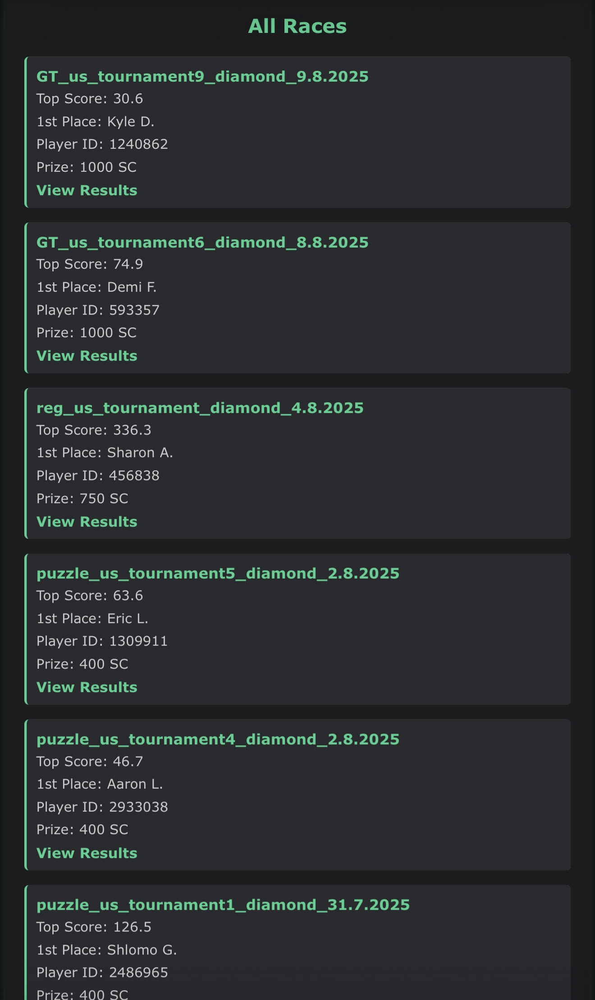

the problem
Sweepstakes casinos run recurring race tournaments — leaderboards with prize pools. The casino shows you the current race and then the data is gone: no history, no way to see how a player has done across races, no API. If you want to study races over time, you have to keep the data yourself.
And the reason to study them: with enough history you can see what scores actually win, who shows up, and which races pay out more than they cost to chase — the moments a "losing" casino game quietly crosses 100% RTP and becomes a +EV game. Spotting those moments is the whole point. Slosh hunts the same thing at the blackjack tables.
how the data gets in
There's no official API, so the ingestion layer is people. Contributors run a tampermonkey userscript that captures the leaderboard JSON while they browse the casino normally, and POSTs it to the app with a per-contributor API key. The server takes it from there: browse races, open a tournament's full rankings, or pull up any player's history across every race in the database.

the dedup problem
The interesting engineering is in the upload path. The casino reuses tournament identifiers, so you can't trust the key to tell races apart — an incoming snapshot is matched to a stored race only if at least 50 of its player IDs overlap with what's already there. And since multiple contributors upload the same race at different times, a snapshot is only accepted when at least one position's score actually improved; otherwise the server shrugs: {"status": "skipped", "reason": "no improved scores"}. Newer snapshots wipe and replace the stored rankings, and player rows accumulate across races — which is what makes the per-player history pages possible.
the rest of the toolkit
The tracker wasn't alone. A companion CLI decodes the profile blob the casino's own client gets handed, strips out the personal data, and reports the numbers that actually matter for the hunt: your bet-to-buy ratio against the promo targets (2.5× and 3.0× — and exactly how far you are from hitting each one), plus whether the account is shadow-banned. You'd be surprised how much a casino tells you about yourself if you just decode what it's already sending.
The webapp went through two generations too — a local sqlite version first, then the deployed postgres version on replit.
stack
- backend
- Python, FastAPI + uvicorn, SQLAlchemy, PostgreSQL. The whole server is one 241-line main.py.
- frontend
- Server-rendered jinja2 templates, hand-written css, dark theme.
- ingestion
- Tampermonkey userscript, distributed privately to contributors.
- hosting
- Replit autoscale deploy with managed postgres.
- status
- Offline at the moment — it ran through fall 2026 and the deploy has since lapsed.
Why "raccce" with three c's? Great question.